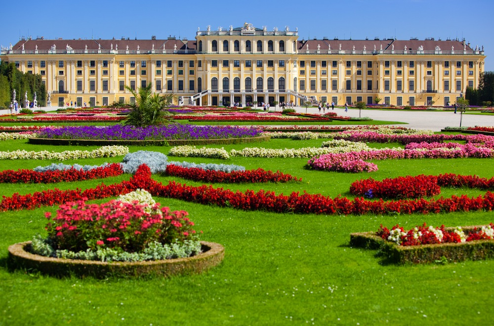
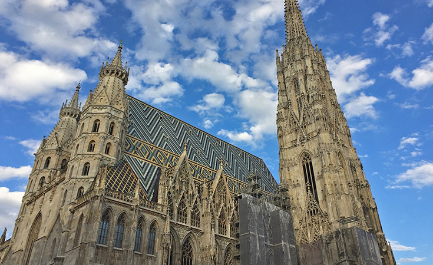
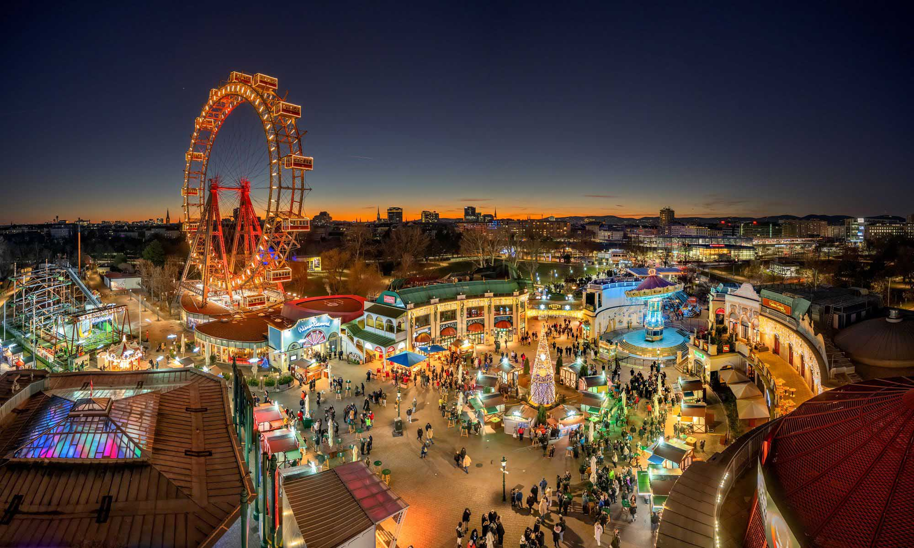

Detaljno o Beču
1. Istorija i carska tradicija

Beč ima dugu i fascinantnu istoriju koja se proteže još od rimskog logora Vindobone. Tokom vijekova, grad je izrastao u srce mocnog Carstva. Habzburzi su ostavili neizbrisiv trag kroz grandiozne građevine koje danas krase austrijsku prestonicu.
Najpoznatija carska rezidencija, dvorac Šenbrun, svjedok je raskošnog života dvora. Uz njega se vezuje i bogata kulturna baština, a sam grad često nazivaju i svjetskom prestonicom muzike jer su u njemu stvarali velikani poput Mocarta, Betovena i Štrausa.
2. Arhitektura i znamenitosti

Arhitektura Beča predstavlja spoj gotike, baroka i modernizma. Simbol grada je katedrala Svetog Stefana (nem. Stephansdom
), čiji se toranj uzdiže visoko iznad starog gradskog jezgra. Temperature u gradu tokom ljeta znaju dosegnuti i do 35℃1, što dodatno naglašava potrebu za uživanjem u sjenovitim parkovima.
Kulturna ponuda obuhvata i čuvenu Bečku državnu operu WSO, koja svake godine ugosti stotine hiljada ljubitelja umjetnosti iz cijelog svijeta.
3. Savremeni Beč
Galerija na otvorenom
Danas je Beč moderan evropski centar koji uspješno balansira očuvanje istorijskog nasljeđa i savremene urbane trendove. Beč je takođe poznat po prelijepim parkovima, kao što je Prater sa svojim čuvenim Panoramskim točkom (Riesenrad), koji pruža nevjerovatan pogled na cijelu austrijsku prestonicu.

Napomena: Prikazana slika se automatski prilagođava rezoluciji ekrana posjetioca.
Izvori informacija i slika:
- Tekst prilagođen sa: Wien.info - Zvanični turistički portal